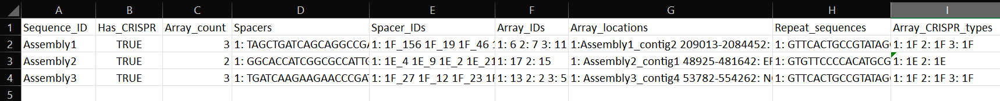

minced
Introduction
CCTK minced identifies CRISPR arrays in assemblies using the tool minced. The output produced by minced is then processes into several output files containing information about identified CRISPR arrays and spacers.
Basic Usage
cctk minced will identify CRISPRs in all assemblies contained in a directory and process the output using the following minimal command:
cctk minced -i <directory of assemblies> -o <output directory> -m -p
N.B. Basic usage may include -l and -r options as well depending on your situation. See the Advanced Usage section for details.
Output files
Both cctk minced and cctk blast produce the same output files. However, cctk minced also produces output files made my minced that are retained for the user’s reference.
cctk minced creates two directories in the user-specified output directory (if they did not already exist): MINCED_OUT/ and PROCESSED/. MINCED_OUT/ contains all of the output files produced by minced. PROCESSED/ contains files summarizing various features of the CRISPR arrays identified by minced in more useful formats than the raw minced output. In addition to creating output files, a summary of the run is written to stderr stating the number of unique spacers that were identified and the number of distinct arrays in which they were identified.
CRISPR_spacers.fna
Summary
Sequences of all of the unique spacers that were identified in the provided assemblies. Fasta headers are constructed from the best matching repeat ID and an integer that counts the number of spacers found associated with that repeat. See Advanced Usage for details about how the repeat ID to assign to each spacer is chosen and how orientation of the spacer sequence is chosen by cctk minced. cctk blast gets the repeat ID portion of the spacer fasta header from the fasta header of the repeat used to identify the CRISPR array by BLAST.
Format
Fasta nucleotide sequence
Example
>1F_1
GGTACGTGGTTTCGACCAACAGCACTGCCCAA
>1F_2
AGGCTGCCAAGTCGGTGCGCGAGGCCGGCTTT
>1F_3
TGCAGCGATTGCACCTTGGCCTGCTGCCGATC
>1E_1
CATCTGGCCGGGGCTCGGGTCTGGTTCTACGA
>1E_2
GATGGCAACCGGCGTTTGTCCGCGCTGAACTG
Array_IDs.txt
Summary
CRISPR arrays are defined as distinct by cctk if they contain a single different spacer to any other arrays. Each distinct array is assigned a numerical ID based on the order in which they are found in input assemblies. This file contains the IDs of the spacers in each array.
Format
2 columns, tab-delimited.
Column 1: ID of array Column 2: Space-delimited list of IDs (fasta headers) of spacers in this array
Example
1 1F_42 1F_18 1F_153 1F_53 1F_82 1F_148
2 1E_90 1E_56 1E_166 1E_26 1E_141 1E_13 1E_77
Array_seqs.txt
Summary
This file contains the sequence of the spacers in each array.
Format
2 columns, tab-delimited.
Column 1: ID of array Column 2: Space-delimited list of sequence of spacers in this array
Example
1 GGTACGTGGTTTCGACCAACAGCACTGCCCAA AGGCTGCCAAGTCGGTGCGCGAGGCCGGCTTT
2 CATCTGGCCGGGGCTCGGGTCTGGTTCTACGA GATGGCAACCGGCGTTTGTCCGCGCTGAACTG
Array_locations.bed
Summary
Contig names and contig locations in which CRISPR arrays were identified.
Format
BED format.
First line is a “#” character followed by tab-delimited column names.
Name column contains the ID of the array at the indicated location. This ID corresponds to the IDs in Array_IDs.txt and Array_seqs.txt
Example
N.B. when viewing this file in a text editor, the headings and column contents will usually not line up, visually. If you wish to view this file for manual inspection, it will read into excel with proper column assignments or can be viewed in the terminal using column -t Array_locations.bed | less
#contig contigStart contigEnd name score strand
Assembly1_contig2 208444 209013 6 0 -
Assembly1_contig6 19991 20559 7 0 +
Assembly2_contig1 29424 30050 11 0 -
Array_network.txt
Summary
Network representation of the number and proportion of spacers that arrays have in common with one another. Each pair of arrays that share one or more spacers are respresented by an edge in the network. The similarity between arrays is represented as both the number of spacers in common, and the Jaccard similarity index of the two arrays. The repeat ID associated with each array is also included.
This file can be easily read into a network visualization software such as cytoscape, as demonstrated in the tutorial.
Jaccard similarity between two arrays is defined as the number of unique spacers in common between the two arrays, divided by the combined number of unique spacers present in the two arrays.
e.g. for the following 2 arrays (as they would be represented in Array_IDs.txt): Array Spacers 1 1F_1 1F_2 1F_3 2 1F_4 1F_2 1F_3
The array both contain spacers 1F_2 and 1F_3, while each array also contains one spacer that is not present in the other array. Therefore, the 2 shared spacers are 1F_2 and 1F_3, while the list of 4 total unique spacers in the two arrays is 1F_1, 1F_2, 1F_3, and 1F_4. This results in a Jaccard similarity index of 2/4 = 0.5
Jaccard is an effective similarity measure for comparing CRISPR arrays as it takes into account both the number of spacers in common between two arrays, and the spacers present in each array that are not shared.
Format
Tab-delimited.
First line is header information
Example
Array_A Array_B Shared_spacers Jaccard_similarity Array_A_type Array_B_type
6 4 9 0.75 1F 1F
11 1 10 0.5263157894736842 1F 1F
13 8 1 0.02127659574468085 1F 1F
2 9 12 0.3333333333333333 1F 1F
CRISPR_summary_table.csv
Summary
Summary of CRISPR arrays found in each assembly with information about each array. This file is designed to be read into Microsoft Excel or a similar program to view.
Format
comma-delimited (csv) table
Columns:
Sequence_ID: Name of assembly (extracted from input file name)
Has_CRISPR: Boolean whether and CRISPR arrays were found
Array_count: Number of CRISPR arrays found. No further columns are populated if no arrays were found.
Spacers: List of spacer sequences found in each array
Spacer_IDs: List of spacer IDs found in each array
Array_IDs: List of array IDs
Array_locations: List of array locations (contig name, start, stop)
Repeat_sequences: Sequence of the most common repeat in each array
Array_CRISPR_types: Most similar repeat type found
In columns 4-9, arrays are numbered according to the order in which they were found in the input assembly file. These numbers correspond between columns in a given row such that the spacer IDs for array 1 correspond to the spacer sequences of array 1 etc.
Example
CRISPR_summary_table.txt
Summary
Summary of CRISPR arrays found in each assembly with information about each array. This file is easier to interact with programatically.
Format
Tab-delimited table with “|” (pipe)-delimited lists of arrays in columns 4-9 within each array, elements are space-delimited.
Example
Sequence_ID Has_CRISPR Array_count Spacers Spacer_IDs Array_IDs Array_locations Repeat_sequences Array_CRISPR_types
Assembly1 True 3 TAGCTGATCAGCAGGCCGACAGTCAGGCCTGC TACCCGAATACGACTTGCGCGAGGAAGACGGT AGCATCGCATCAAATCGTGCAGAACACGATAA TGGTCGAGCAGTTCGGCAAAGGGGCCGTGGTT TTCACCTGGTCGCCGGCCAGGCTGATCACTGC TACAAGGTCATGGCGCTCGGCAACGTGGTGGAA GCTGTGCGTCGCCGTGGTCTGACGGTCGAATC AGCAGATACCCGAACCACTGGAGGTACATGCA TTCATCAGGATGCCGCCAAGGGTCCGCATAAT|AGGTCGAGGTGGGCTCGGCGGCGATGATCGAT GGTACGTGGTTTCGACCAACAGCACTGCCCAA TAAAGGAGATTGCCATGCTGATCAAACTTCCC GTCAGGGTCGTGCATGACTCCGATGTGGTGGC CGTCCAGAACGTCACACGCTCGCCGTCGATGT AACCGGAGCCTTCGGGCCGCGTTGGGATCCAC TTGACTGCTGGGGCCTGACGCTCATCGCGCGG GCGACCCTGGCCAGGGCGGCGTCGCGCTCTGC TTGAGCACAACCGGCTGAGCCAGCTGGTTGTC|CAGCAGCGGCTCCAGGAAGAGGGGCGCTGCCT AAGAGTCGCGGCGACAACTACCAGACGTCCGC GTATGGCTCTCTCCATTGGGGTGGCGATACTC GATCTGGGGCGGCATCATCACAGCAGAATCTA ACAACATCAATCGCCTGATGCTGGGGCACCTG AGCTTCGGCACCCTGATGCGCGCCGTCGAGGG AATGCGGTCCTGCGCATCCGAACTGGTAAGTG GACCCCCGGAGGACCAACCGTGGACAACGACA TCCTTCGGCTCCGCCGGCCGGATCGCTGCAT GTCGCGAAGTTCATAAGCGGGCTTAGGGCGA 1F_156 1F_19 1F_46 1F_123 1F_59 1F_64 1F_34 1F_93 1F_33|1F_99 1F_1 1F_45 1F_83 1F_124 1F_126 1F_30 1F_39 1F_49|1F_134 1F_81 1F_55 1F_84 1F_16 1F_5 1F_51 1F_100 1F_106 1F_145 6|7|11 Assembly1_contig2 209013-208445|Assembly1_contig4 19992-20559|Assembly1_contig4 30050-29425 GTTCACTGCCGTATAGGCAGCTAAGAAA|GTTCACTGCCGTGTAGGCAGCTAAGAAA|GTTCACTGCCGTATAGGCAGCTAAGAAA 1F|1F|1F
Advanced Usage
The usage of cctk minced described in the Basic Usage is sufficient to identify CRISPR arrays in assemblies. The two most likely situations in which you will need more complex usage of cctk minced are:
You installed minced manually and it is not in your path (not a problem if you install using conda).
In that case you will need to provide the path to your minced executable using the
-loption.e.g.
cctk minced -i <directory of assemblies> -o <output directory> -l <path to minced> -m -p
You are not analyzing the genomes of E. coli or Pseudomonas aeruginosa isolates.
cctk mincedcomes with 3 hard-coded CRISPR repeats: I-C, I-E, and I-F. These repeats repeats were selected based on my usage while developing CCTK and may be added to in the future. (Please send characterized CRISPR repeats with known orientation to Alan via email or as an issue on the CCTK github and I will be happy to add them. If you have a citable reference for the repeat and it’s correct orientation all the better!)cctk minceduses repeats to add CRISPR type information to spacer fasta headers, but also (and more importantly) to figure out the correct orientation of CRISPR arrays with regards to their leader and trailer ends as minced does not check array orientation itself. This information is essential if you wish to analyze your CRISPR arrays usingcctk CRISPRtree.Relying on the built-in repeat sequences will result in consistent orientation of CRISPR arrays with the same repeat sequence. However, there is a roughly 50% chance your arrays will be output in the reverse orientation.
If you wish to provide your own repeat sequences in order to properly characterize repeat type and orient your arrays correctly, you can provide any number of repeats in fasta format using the
-roption. It is important that your repeat sequences be oriented so that the leader end of the array is 5’ of the repeat.Repeats are only used during processing steps so you do not need to run minced again if you have already done so (i.e. you do not need
-ior-minputs). An example command to include user-defined repeats iscctk minced -o <output directory> -r <repeats file> -p
Finally, you may wish to manually curate the output of
cctk minced.For example, you may find that arrays in your output files seem like they are not actually CRISPR arrays. You may also find that an array has the same one or two bases on the end of every spacer (see Limitations and considerations for an explanation of how this may occur).
cctk minceddoes not include functionality for fine control over outputs or how arrays are identified. Instead you must laboriously modify the minced output files. However, whilecctk mincedwon’t help you with this process, it does retain all the minced output files in the MINCED_OUT/ directory in your specified output directory. Furthermore it will allow you to process the modified minced output files without rerunning minced by omitting the-mflag in your command as in the example below.cctk minced -o <output directory containing MINCED_OUT/> -p
When running only processing steps
cctk mincedwill read and process all files in the MINCED_OUT/ directory in your specified output directory (Crucially not the input directory specified with-i, but instead the output directory specified with-o). The only requirement is that the format of the minced output files is not changed. You can delete whole arrays from these files and can modify the sequence of spacers and repeats andcctk mincedshould process them without issue.Consider the following example minced output file.
Sequence 'Assembly1_contig1' (209122 bp) CRISPR 1 Range: 208445 - 208593 POSITION REPEAT SPACER -------- ---------------------------- -------------------------------- 208445 AAAAAAAAAAAAAAAAAAAAAAAAAAAA TTTTTTTTTTTTTTTTTTTTTTTTTTTTTTTT [ 28, 32 ] 208505 AAAAAAAAAAAAAAAAAAAAAAAAAAAA TTTTTTTTTTTTTTTTTTTTTTTTTTTTTTTT [ 28, 32 ] 208565 AAAAAAAAAAAAAAAAAAAAAAAAAAAA -------- ---------------------------- -------------------------------- Repeats: 3 Average Length: 28 Average Length: 32 Time to find repeats: 8 ms Sequence 'Assembly1_contig2' (84619 bp) CRISPR 2 Range: 19992 - 20319 POSITION REPEAT SPACER -------- --------------------------- -------------------------------- 19992 TTCACTGCCGTGTAGGCAGCTAAGAAA AGGTCGAGGTGGGCTCGGCGGCGATGATCGAT [ 27, 32 ] 20052 TTCACTGCCGTGTAGGCAGCTAAGAAA GGTACGTGGTTTCGACCAACAGCACTGCCCAAG [ 27, 33 ] 20112 TTCACTGCCGTGTAGGCAGCTAAGAAA TAAAGGAGATTGCCATGCTGATCAAACTTCCCG [ 27, 33 ] 20172 TTCACTGCCGTGTAGGCAGCTAAGAAA GTCAGGGTCGTGCATGACTCCGATGTGGTGGCG [ 27, 33 ] 20232 TTCACTGCCGTGTAGGCAGCTAAGAAA CGTCCAGAACGTCACACGCTCGCCGTCGATGTG [ 27, 33 ] 20292 TTCACTGCCGTGTAGGCAGCTAAGAAA -------- --------------------------- -------------------------------- Repeats: 6 Average Length: 27 Average Length: 33
In this example file the first array is clearly nonsense, while the second array has what looks like a type I-F repeat missing the first G and most of the spacers have a G on one end. It seems like the first array should be removed, while the second array should be modified to correct the mischaracterization of the repeat boundaries.
In minced output files, the information about a CRISPR array begins on the line starting with the word “CRISPR” and ends on the line starting with the word “Repeats”. In addition, If multiple arrays are identified in the same contig, they will have a single line starting with the word “Sequence” that identifies all of the subsequent arrays as being found in the names contig.
If you wish to delete an array, remove all lines describing that CRISPR array. If it is the only array found in that contig, remove the line above it starting with “Sequence” as well.
Modifying repeat and spacer sequences is easier. Just make the desired changes. You do not need to change the length information on the right of each line as
cctk minceddoes not use that information. Additionally, you do not need to worry about the number of blank lines.Making the above changes would result in the following modified file:
Sequence 'Assembly1_contig2' (84619 bp) CRISPR 2 Range: 19992 - 20319 POSITION REPEAT SPACER -------- --------------------------- -------------------------------- 19992 GTTCACTGCCGTGTAGGCAGCTAAGAAA AGGTCGAGGTGGGCTCGGCGGCGATGATCGAT [ 27, 32 ] 20052 GTTCACTGCCGTGTAGGCAGCTAAGAAA GGTACGTGGTTTCGACCAACAGCACTGCCCAA [ 27, 33 ] 20112 GTTCACTGCCGTGTAGGCAGCTAAGAAA TAAAGGAGATTGCCATGCTGATCAAACTTCCC [ 27, 33 ] 20172 GTTCACTGCCGTGTAGGCAGCTAAGAAA GTCAGGGTCGTGCATGACTCCGATGTGGTGGC [ 27, 33 ] 20232 GTTCACTGCCGTGTAGGCAGCTAAGAAA CGTCCAGAACGTCACACGCTCGCCGTCGATGT [ 27, 33 ] 20292 GTTCACTGCCGTGTAGGCAGCTAAGAAA -------- --------------------------- -------------------------------- Repeats: 6 Average Length: 27 Average Length: 33
Limitations and considerations
Minced uses a sliding window to detect regions containing more than two (roughly) equally spaced (approximately) repeated sequences. The first two repeated sequences that are found (as the window slides 5’ to 3’ along the sequence) are used to define the repeat sequence. Additional windows are then added, the same distance apart until no more repeats are found. See the CRT publication for further description. This approach results in a few behaviours that a user should bear in mind:
Not all regions containing 3 or more (approximate) repeats are CRISPRs. Manual curation is important to confirm that predicted CRISPR arrays are to be believed.
By only comparing a few, short sequences (i.e. the contents of the sliding windows), minced tolerates relatively large numbers of differences between repeats while still being confident the sequences are related. This can result in the inclusion of spacers flanked by fairly degenerate repeats.
By determining the repeat sequence using the first repeats encountered, minced is vulnerable to mischaracterizing the repeat sequence in the rest of the array if these first repeats are degenerate. CRISPR array trailer repeats often contain mutations not present in more leader-proximal repeats. If minced finds an array encoded on the minus strand (i.e. it finds the trailer end first while scanning the plus strand 5’ to 3’) and the array has differences in it’s trailer-most repeats end-most bases, this can result in minced miscalling the boundaries of the repeat and including one or two repeat bases in all (or most) spacers in the array.